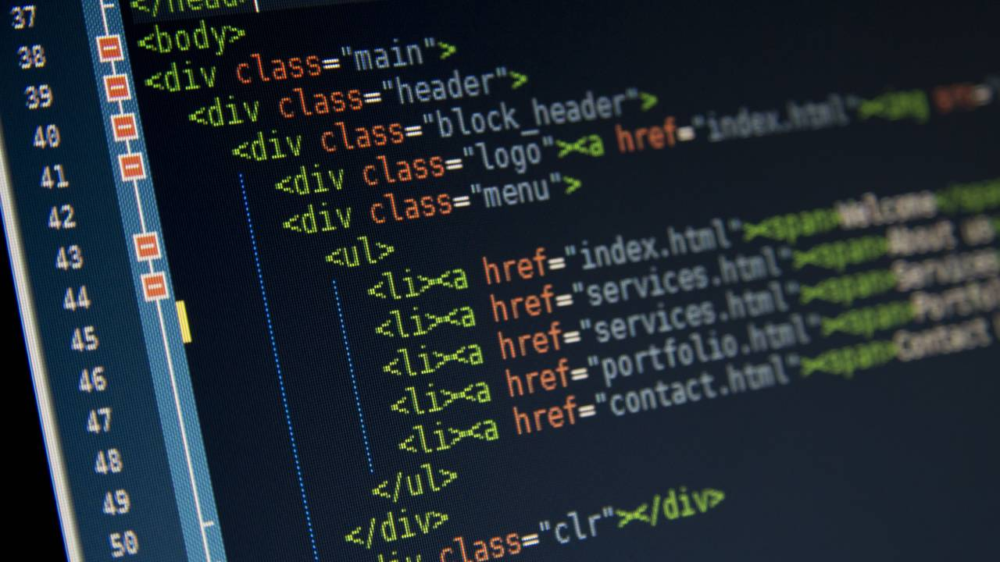
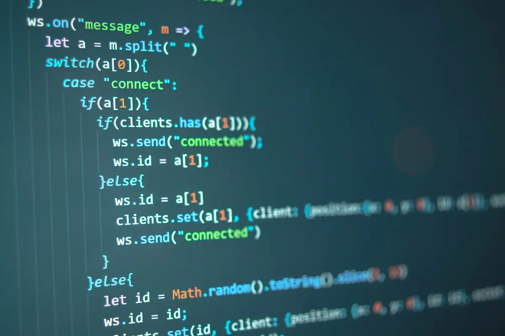

INFORMATICA
Introduzione generale alla materia
L’informatica è la disciplina che studia i principi, le tecnologie e le applicazioni legate all’elaborazione automatica delle informazioni. Si occupa della progettazione e dello sviluppo di hardware e software, dalla creazione di sistemi operativi alla gestione di reti informatiche e database. Il suo obiettivo principale è risolvere problemi complessi attraverso algoritmi, linguaggi di programmazione e strumenti digitali, migliorando l’efficienza e la comunicazione tra persone e dispositivi

Argomenti
Si affronta principalmente la programmazione con linguaggi come Python, Java o C++, la gestione di database relazionali con SQL e il web development. Infine, si esplorano temi avanzati come il cloud computing, la cybersecurity e le basi dell’intelligenza artificiale, preparando gli studenti per il mondo del lavoro o per studi universitari più specializzati
Teoria
La teoria della programmazione si occupa dei principi che guidano la scrittura e l’esecuzione del codice, fornendo una base solida per comprendere i linguaggi di programmazione e le tecniche di sviluppo. Si studiano i concetti fondamentali come gli algoritmi, le strutture dati e i paradigmi di programmazione, tra cui la programmazione procedurale, orientata agli oggetti e funzionale. Viene approfondita l’analisi della complessità computazionale, che aiuta a valutare l’efficienza degli algoritmi, e la gestione della memoria, per ottimizzare le risorse del sistema. Si esplorano inoltre modelli di astrazione, la logica formale e il debugging, essenziali per scrivere codice affidabile e privo di errori. Questo studio fornisce le competenze per sviluppare software robusti e comprendere il funzionamento interno dei linguaggi di programmazione
C++

In C++ si sviluppano programmi sfruttando un linguaggio potente e versatile, utilizzato per applicazioni software, videogiochi, sistemi operativi e molto altro. Si scrivono codice con strutture come variabili, cicli e condizioni per automatizzare operazioni e risolvere problemi computazionali. Uno degli aspetti fondamentali è la programmazione orientata agli oggetti (OOP), che permette di organizzare il codice in classi e oggetti per una gestione più efficiente e modulare. Si lavora con la gestione della memoria, utilizzando puntatori per manipolare dati direttamente, e con algoritmi avanzati per ottimizzare le prestazioni. Inoltre, si può sviluppare grafica con librerie come OpenGL e lavorare su progetti complessi con multithreading e networking. C++ è un linguaggio che offre grande controllo sull'hardware e sulle prestazioni del software, rendendolo ideale per applicazioni ad alta efficienza
HTML

Cos'è HTML
HTML (HyperText Markup Language) è il linguaggio di base per la creazione di pagine web. Funziona attraverso una struttura di elementi chiamati tag, che definiscono il contenuto e l’organizzazione della pagina. Con HTML, si possono creare titoli, paragrafi, immagini, link e tabelle, garantendo la corretta visualizzazione delle informazioni sui browser. Pur non essendo un linguaggio di programmazione, HTML è indispensabile per la costruzione di siti web e lavora spesso in combinazione con CSS per lo stile e JavaScript per l’interattività.
JAVA

Java è un linguaggio di programmazione potente e versatile, noto per la sua portabilità e sicurezza. È basato sul concetto "Write Once, Run Anywhere", grazie alla sua macchina virtuale (JVM) che permette di eseguire codice su diverse piattaforme senza modifiche. Java supporta la programmazione orientata agli oggetti (OOP), facilitando l'organizzazione del codice in classi e oggetti per una maggiore modularità ed efficienza. È ampiamente utilizzato nello sviluppo di applicazioni desktop, web, mobile e persino sistemi embedded. Con librerie e framework come Spring e Hibernate, Java è essenziale per la creazione di software aziendali scalabili
Programmazzioni a gruppi
I lavori di gruppo di programmazione sono attività collaborative in cui più persone sviluppano software, risolvono problemi algoritmici o costruiscono applicazioni insieme. Questi progetti permettono di migliorare la gestione del codice, imparare nuove tecniche e sviluppare competenze di lavoro in team, essenziali nel mondo informatico.
La programmazzione ad oggetti
La programmazione orientata agli oggetti (OOP) è un paradigma di sviluppo che organizza il codice attorno a oggetti, rendendolo più modulare, riutilizzabile e facile da gestire. Un oggetto è un’istanza di una classe, che funge da modello per definire proprietà e comportamenti. I principi fondamentali dell’OOP includono l’incapsulamento, che protegge i dati e ne controlla l’accesso, l’ereditarietà, che permette a una classe di derivare caratteristiche da un’altra, e il polimorfismo, che consente di trattare oggetti diversi con un’interfaccia comune. Questo approccio è ampiamente utilizzato in linguaggi come C++, Java e Python per creare software scalabili e organizzati, favorendo una gestione più efficiente dello sviluppo.
<Attività laboratoriali
Le attività laboratoriali di informatica permettono di applicare concretamente le nozioni teoriche, migliorando le competenze tecniche attraverso esperimenti pratici. In un istituto tecnico, gli studenti lavorano su diversi ambiti, tra cui la programmazione, lo sviluppo web e la gestione dei sistemi. Si progettano e scrivono codici in linguaggi come C++, Java e Python, testando algoritmi e strutture dati. Nella gestione dei sistemi e delle reti, si configurano server, router e firewall, simulando ambienti reali. La sicurezza informatica è un altro settore chiave, con test su crittografia, autenticazione e analisi delle vulnerabilità. Inoltre, si utilizzano ambienti virtualizzati per sperimentare senza rischiare danni ai sistemi reali. Il laboratorio è il luogo ideale per imparare attraverso la pratica, sviluppando capacità di problem solving e lavoro in team